########################################################
#
# Exercise 3.1 - Part II:
#
# Classification: Alternative Techniques
#
########################################################
### Install packages ###
if(!require(pacman))
install.packages("pacman")Loading required package: pacmanpacman::p_load(
C50, # C5.0 Decision Trees and Rule-Based Models
caret, # Classification and Regression Training
e1071, # Misc Functions of the Department of Statistics (e1071), TU Wien
keras, # R Interface to 'Keras'
kernlab, # Kernel-Based Machine Learning Lab
lattice, # Trellis Graphics for R
MASS, # Support Functions and Datasets for Venables and Ripley's MASS
mlbench, # Machine Learning Benchmark Problems
nnet, # Feedforward Neural Networks and Multinomial Log-Linear Models
palmerpenguins, # Palmer Archipelago (Antarctica) Penguin Data
party, # A Laboratory for Recursive Partytioning
partykit, # A Toolkit for Recursive Partytioning
randomForest, # Breiman and Cutler's Random Forests for Classification and Regression
FSelector, # This will bring in "RWeka & also randomForest, et al."
rJava, # I think this is needed for RWeka so I'll add it here
rpart, # Recursive partitioning models
RWeka, # R/Weka Interface
scales, # Scale Functions for Visualization
tidymodels, # Tidy machine learning framework
tidyverse, # Tidy data wrangling and visualization
xgboost, # Extreme Gradient Boosting
snow
)
### Install packages: Show fewer digits ###
options(digits=3)
### Training and Test Data ###
data(Zoo, package="mlbench")
Zoo <- as.data.frame(Zoo)
Zoo |> glimpse()Rows: 101
Columns: 17
$ hair <lgl> TRUE, TRUE, FALSE, TRUE, TRUE, TRUE, TRUE, FALSE, FALSE, TRUE…
$ feathers <lgl> FALSE, FALSE, FALSE, FALSE, FALSE, FALSE, FALSE, FALSE, FALSE…
$ eggs <lgl> FALSE, FALSE, TRUE, FALSE, FALSE, FALSE, FALSE, TRUE, TRUE, F…
$ milk <lgl> TRUE, TRUE, FALSE, TRUE, TRUE, TRUE, TRUE, FALSE, FALSE, TRUE…
$ airborne <lgl> FALSE, FALSE, FALSE, FALSE, FALSE, FALSE, FALSE, FALSE, FALSE…
$ aquatic <lgl> FALSE, FALSE, TRUE, FALSE, FALSE, FALSE, FALSE, TRUE, TRUE, F…
$ predator <lgl> TRUE, FALSE, TRUE, TRUE, TRUE, FALSE, FALSE, FALSE, TRUE, FAL…
$ toothed <lgl> TRUE, TRUE, TRUE, TRUE, TRUE, TRUE, TRUE, TRUE, TRUE, TRUE, T…
$ backbone <lgl> TRUE, TRUE, TRUE, TRUE, TRUE, TRUE, TRUE, TRUE, TRUE, TRUE, T…
$ breathes <lgl> TRUE, TRUE, FALSE, TRUE, TRUE, TRUE, TRUE, FALSE, FALSE, TRUE…
$ venomous <lgl> FALSE, FALSE, FALSE, FALSE, FALSE, FALSE, FALSE, FALSE, FALSE…
$ fins <lgl> FALSE, FALSE, TRUE, FALSE, FALSE, FALSE, FALSE, TRUE, TRUE, F…
$ legs <int> 4, 4, 0, 4, 4, 4, 4, 0, 0, 4, 4, 2, 0, 0, 4, 6, 2, 4, 0, 0, 2…
$ tail <lgl> FALSE, TRUE, TRUE, FALSE, TRUE, TRUE, TRUE, TRUE, TRUE, FALSE…
$ domestic <lgl> FALSE, FALSE, FALSE, FALSE, FALSE, FALSE, TRUE, TRUE, FALSE, …
$ catsize <lgl> TRUE, TRUE, FALSE, TRUE, TRUE, TRUE, TRUE, FALSE, FALSE, FALS…
$ type <fct> mammal, mammal, fish, mammal, mammal, mammal, mammal, fish, f…#Zoo
### 80% Training Data ###
set.seed(123) # for reproducibility
inTrain <- createDataPartition(y = Zoo$type, p = .8)[[1]] #we're using this function from the caret library to split data into "test/training" partitions.
Zoo_train <- dplyr::slice(Zoo, inTrain)
Zoo_test <- dplyr::slice(Zoo, -inTrain)
#Zoo_train
#Zoo_test
### Fitting Different Classification Models to the Training Data ###
###
### Creating an index for our training data. This "organization" is how we'll compare the models later and find the best fit.
train_index <- createFolds(Zoo_train$type, k = 10)
### Conditional Inference Tree (Decision Tree) ###
ctreeFit <- Zoo_train |> train(type ~ .,
method = "ctree",
data = _,
tuneLength = 5,
trControl = trainControl(method = "cv", indexOut = train_index))
ctreeFitConditional Inference Tree
83 samples
16 predictors
7 classes: 'mammal', 'bird', 'reptile', 'fish', 'amphibian', 'insect', 'mollusc.et.al'
No pre-processing
Resampling: Cross-Validated (10 fold)
Summary of sample sizes: 76, 72, 73, 76, 75, 75, ...
Resampling results across tuning parameters:
mincriterion Accuracy Kappa
0.010 0.837 0.785
0.255 0.837 0.785
0.500 0.837 0.785
0.745 0.837 0.785
0.990 0.837 0.785
Accuracy was used to select the optimal model using the largest value.
The final value used for the model was mincriterion = 0.99.plot(ctreeFit$finalModel)
### C 4.5 Decision Tree ###
### "J48" is the C4.5 decision tree algorithm to predict the class label of new instances.
C45Fit <- Zoo_train |> train(type ~ .,
method = "J48",
data = _,
tuneLength = 5,
trControl = trainControl(method = "cv", indexOut = train_index))
C45FitC4.5-like Trees
83 samples
16 predictors
7 classes: 'mammal', 'bird', 'reptile', 'fish', 'amphibian', 'insect', 'mollusc.et.al'
No pre-processing
Resampling: Cross-Validated (10 fold)
Summary of sample sizes: 76, 75, 73, 76, 74, 74, ...
Resampling results across tuning parameters:
C M Accuracy Kappa
0.010 1 0.975 0.967
0.010 2 0.965 0.954
0.010 3 0.953 0.940
0.010 4 0.959 0.948
0.010 5 0.970 0.962
0.133 1 1.000 1.000
0.133 2 0.976 0.968
0.133 3 0.965 0.954
0.133 4 0.959 0.948
0.133 5 0.970 0.962
0.255 1 1.000 1.000
0.255 2 0.976 0.968
0.255 3 0.965 0.954
0.255 4 0.959 0.948
0.255 5 0.970 0.962
0.378 1 1.000 1.000
0.378 2 0.976 0.968
0.378 3 0.965 0.954
0.378 4 0.959 0.948
0.378 5 0.970 0.962
0.500 1 1.000 1.000
0.500 2 0.976 0.968
0.500 3 0.965 0.954
0.500 4 0.959 0.948
0.500 5 0.970 0.962
Accuracy was used to select the optimal model using the largest value.
The final values used for the model were C = 0.133 and M = 1.C45Fit$finalModelJ48 pruned tree
------------------
feathersTRUE <= 0
| milkTRUE <= 0
| | backboneTRUE <= 0
| | | predatorTRUE <= 0
| | | | legs <= 2: mollusc.et.al (1.0)
| | | | legs > 2: insect (6.0)
| | | predatorTRUE > 0: mollusc.et.al (8.0/1.0)
| | backboneTRUE > 0
| | | finsTRUE <= 0
| | | | aquaticTRUE <= 0: reptile (3.0)
| | | | aquaticTRUE > 0
| | | | | eggsTRUE <= 0: reptile (1.0)
| | | | | eggsTRUE > 0: amphibian (4.0)
| | | finsTRUE > 0: fish (11.0)
| milkTRUE > 0: mammal (33.0)
feathersTRUE > 0: bird (16.0)
Number of Leaves : 9
Size of the tree : 17### K-Nearest Neighbors ###
knnFit <- Zoo_train |> train(type ~ .,
method = "knn",
data = _,
preProcess = "scale",
tuneLength = 5,
tuneGrid=data.frame(k = 1:10),
trControl = trainControl(method = "cv", indexOut = train_index))
knnFitk-Nearest Neighbors
83 samples
16 predictors
7 classes: 'mammal', 'bird', 'reptile', 'fish', 'amphibian', 'insect', 'mollusc.et.al'
Pre-processing: scaled (16)
Resampling: Cross-Validated (10 fold)
Summary of sample sizes: 77, 74, 75, 75, 74, 74, ...
Resampling results across tuning parameters:
k Accuracy Kappa
1 1.000 1.000
2 0.965 0.954
3 0.963 0.951
4 0.942 0.925
5 0.941 0.921
6 0.963 0.951
7 0.963 0.951
8 0.941 0.921
9 0.908 0.883
10 0.918 0.892
Accuracy was used to select the optimal model using the largest value.
The final value used for the model was k = 1.knnFit$finalModel1-nearest neighbor model
Training set outcome distribution:
mammal bird reptile fish amphibian
33 16 4 11 4
insect mollusc.et.al
7 8 ### PART (Rule-based classifier) ###
rulesFit <- Zoo_train |> train(type ~ .,
method = "PART",
data = _,
tuneLength = 5,
trControl = trainControl(method = "cv", indexOut = train_index))
rulesFitRule-Based Classifier
83 samples
16 predictors
7 classes: 'mammal', 'bird', 'reptile', 'fish', 'amphibian', 'insect', 'mollusc.et.al'
No pre-processing
Resampling: Cross-Validated (10 fold)
Summary of sample sizes: 73, 74, 76, 76, 75, 74, ...
Resampling results across tuning parameters:
threshold pruned Accuracy Kappa
0.010 yes 0.979 0.973
0.010 no 0.979 0.973
0.133 yes 0.990 0.987
0.133 no 0.979 0.973
0.255 yes 0.990 0.987
0.255 no 0.979 0.973
0.378 yes 0.990 0.987
0.378 no 0.979 0.973
0.500 yes 0.990 0.987
0.500 no 0.979 0.973
Accuracy was used to select the optimal model using the largest value.
The final values used for the model were threshold = 0.5 and pruned = yes.rulesFit$finalModelPART decision list
------------------
feathersTRUE <= 0 AND
milkTRUE > 0: mammal (33.0)
feathersTRUE > 0: bird (16.0)
backboneTRUE <= 0 AND
airborneTRUE <= 0 AND
predatorTRUE > 0: mollusc.et.al (7.0)
backboneTRUE > 0 AND
finsTRUE > 0: fish (11.0)
backboneTRUE <= 0: insect (8.0/1.0)
aquaticTRUE > 0: amphibian (5.0/1.0)
: reptile (3.0)
Number of Rules : 7### Linear Support Vector Machines ###
svmFit <- Zoo_train |> train(type ~.,
method = "svmLinear",
data = _,
tuneLength = 5,
trControl = trainControl(method = "cv", indexOut = train_index))
svmFitSupport Vector Machines with Linear Kernel
83 samples
16 predictors
7 classes: 'mammal', 'bird', 'reptile', 'fish', 'amphibian', 'insect', 'mollusc.et.al'
No pre-processing
Resampling: Cross-Validated (10 fold)
Summary of sample sizes: 74, 74, 77, 75, 74, 77, ...
Resampling results:
Accuracy Kappa
1 1
Tuning parameter 'C' was held constant at a value of 1svmFit$finalModelSupport Vector Machine object of class "ksvm"
SV type: C-svc (classification)
parameter : cost C = 1
Linear (vanilla) kernel function.
Number of Support Vectors : 38
Objective Function Value : -0.143 -0.217 -0.15 -0.175 -0.0934 -0.0974 -0.292 -0.0835 -0.154 -0.0901 -0.112 -0.189 -0.593 -0.13 -0.179 -0.122 -0.0481 -0.0838 -0.125 -0.15 -0.501
Training error : 0 ### Random Forest ###
###
### 1 of 2 Ensemble methods we'll use (RF & Boosting)
randomForestFit <- Zoo_train |> train(type ~ .,
method = "rf",
data = _,
tuneLength = 5,
trControl = trainControl(method = "cv", indexOut = train_index))
randomForestFitRandom Forest
83 samples
16 predictors
7 classes: 'mammal', 'bird', 'reptile', 'fish', 'amphibian', 'insect', 'mollusc.et.al'
No pre-processing
Resampling: Cross-Validated (10 fold)
Summary of sample sizes: 75, 76, 75, 76, 74, 73, ...
Resampling results across tuning parameters:
mtry Accuracy Kappa
2 1 1
5 1 1
9 1 1
12 1 1
16 1 1
Accuracy was used to select the optimal model using the largest value.
The final value used for the model was mtry = 2.randomForestFit$finalModel
Call:
randomForest(x = x, y = y, mtry = param$mtry)
Type of random forest: classification
Number of trees: 500
No. of variables tried at each split: 2
OOB estimate of error rate: 8.43%
Confusion matrix:
mammal bird reptile fish amphibian insect mollusc.et.al
mammal 33 0 0 0 0 0 0
bird 0 16 0 0 0 0 0
reptile 0 1 0 2 1 0 0
fish 0 0 0 11 0 0 0
amphibian 0 0 1 0 3 0 0
insect 0 0 0 0 0 7 0
mollusc.et.al 0 0 0 0 0 2 6
class.error
mammal 0.00
bird 0.00
reptile 1.00
fish 0.00
amphibian 0.25
insect 0.00
mollusc.et.al 0.25### Gradient Boosted Decision Trees (xgboost) ###
xgboostFit <- Zoo_train |> train(type ~ .,
method = "xgbTree",
data = _,
tuneLength = 5,
trControl = trainControl(method = "cv", indexOut = train_index),
tuneGrid = expand.grid(
nrounds = 20,
max_depth = 3,
colsample_bytree = .6,
eta = 0.1,
gamma=0,
min_child_weight = 1,
subsample = .5
))
xgboostFiteXtreme Gradient Boosting
83 samples
16 predictors
7 classes: 'mammal', 'bird', 'reptile', 'fish', 'amphibian', 'insect', 'mollusc.et.al'
No pre-processing
Resampling: Cross-Validated (10 fold)
Summary of sample sizes: 75, 71, 73, 76, 76, 74, ...
Resampling results:
Accuracy Kappa
0.973 0.964
Tuning parameter 'nrounds' was held constant at a value of 20
Tuning
held constant at a value of 1
Tuning parameter 'subsample' was held
constant at a value of 0.5xgboostFit$finalModel##### xgb.Booster
raw: 112 Kb
call:
xgboost::xgb.train(params = list(eta = param$eta, max_depth = param$max_depth,
gamma = param$gamma, colsample_bytree = param$colsample_bytree,
min_child_weight = param$min_child_weight, subsample = param$subsample),
data = x, nrounds = param$nrounds, num_class = length(lev),
objective = "multi:softprob")
params (as set within xgb.train):
eta = "0.1", max_depth = "3", gamma = "0", colsample_bytree = "0.6", min_child_weight = "1", subsample = "0.5", num_class = "7", objective = "multi:softprob", validate_parameters = "TRUE"
xgb.attributes:
niter
callbacks:
cb.print.evaluation(period = print_every_n)
# of features: 16
niter: 20
nfeatures : 16
xNames : hairTRUE feathersTRUE eggsTRUE milkTRUE airborneTRUE aquaticTRUE predatorTRUE toothedTRUE backboneTRUE breathesTRUE venomousTRUE finsTRUE legs tailTRUE domesticTRUE catsizeTRUE
problemType : Classification
tuneValue :
nrounds max_depth eta gamma colsample_bytree min_child_weight subsample
1 20 3 0.1 0 0.6 1 0.5
obsLevels : mammal bird reptile fish amphibian insect mollusc.et.al
param :
list()### Artificial Neural Network ###
nnetFit <- Zoo_train |> train(type ~ .,
method = "nnet",
data = _,
tuneLength = 5,
trControl = trainControl(method = "cv", indexOut = train_index),
trace = FALSE)
nnetFitNeural Network
83 samples
16 predictors
7 classes: 'mammal', 'bird', 'reptile', 'fish', 'amphibian', 'insect', 'mollusc.et.al'
No pre-processing
Resampling: Cross-Validated (10 fold)
Summary of sample sizes: 75, 73, 76, 75, 73, 75, ...
Resampling results across tuning parameters:
size decay Accuracy Kappa
1 0e+00 0.743 0.649
1 1e-04 0.748 0.642
1 1e-03 0.900 0.866
1 1e-02 0.827 0.772
1 1e-01 0.704 0.601
3 0e+00 0.965 0.953
3 1e-04 0.951 0.934
3 1e-03 0.978 0.971
3 1e-02 0.989 0.986
3 1e-01 0.968 0.958
5 0e+00 0.933 0.908
5 1e-04 0.983 0.976
5 1e-03 1.000 1.000
5 1e-02 1.000 1.000
5 1e-01 0.989 0.986
7 0e+00 0.989 0.984
7 1e-04 0.989 0.986
7 1e-03 1.000 1.000
7 1e-02 0.989 0.986
7 1e-01 0.989 0.986
9 0e+00 1.000 1.000
9 1e-04 1.000 1.000
9 1e-03 1.000 1.000
9 1e-02 1.000 1.000
9 1e-01 1.000 1.000
Accuracy was used to select the optimal model using the largest value.
The final values used for the model were size = 5 and decay = 0.01.nnetFit$finalModela 16-5-7 network with 127 weights
inputs: hairTRUE feathersTRUE eggsTRUE milkTRUE airborneTRUE aquaticTRUE predatorTRUE toothedTRUE backboneTRUE breathesTRUE venomousTRUE finsTRUE legs tailTRUE domesticTRUE catsizeTRUE
output(s): .outcome
options were - softmax modelling decay=0.01### Comparing Models ###
resamps <- resamples(list(
ctree = ctreeFit,
C45 = C45Fit,
SVM = svmFit,
KNN = knnFit,
rules = rulesFit,
randomForest = randomForestFit,
xgboost = xgboostFit,
NeuralNet = nnetFit
))
resamps
Call:
resamples.default(x = list(ctree = ctreeFit, C45 = C45Fit, SVM = svmFit, KNN
= knnFit, rules = rulesFit, randomForest = randomForestFit, xgboost
= xgboostFit, NeuralNet = nnetFit))
Models: ctree, C45, SVM, KNN, rules, randomForest, xgboost, NeuralNet
Number of resamples: 10
Performance metrics: Accuracy, Kappa
Time estimates for: everything, final model fit summary(resamps)
Call:
summary.resamples(object = resamps)
Models: ctree, C45, SVM, KNN, rules, randomForest, xgboost, NeuralNet
Number of resamples: 10
Accuracy
Min. 1st Qu. Median Mean 3rd Qu. Max. NA's
ctree 0.778 0.783 0.817 0.837 0.871 1 0
C45 1.000 1.000 1.000 1.000 1.000 1 0
SVM 1.000 1.000 1.000 1.000 1.000 1 0
KNN 1.000 1.000 1.000 1.000 1.000 1 0
rules 0.900 1.000 1.000 0.990 1.000 1 0
randomForest 1.000 1.000 1.000 1.000 1.000 1 0
xgboost 0.857 1.000 1.000 0.973 1.000 1 0
NeuralNet 1.000 1.000 1.000 1.000 1.000 1 0
Kappa
Min. 1st Qu. Median Mean 3rd Qu. Max. NA's
ctree 0.700 0.723 0.758 0.785 0.818 1 0
C45 1.000 1.000 1.000 1.000 1.000 1 0
SVM 1.000 1.000 1.000 1.000 1.000 1 0
KNN 1.000 1.000 1.000 1.000 1.000 1 0
rules 0.868 1.000 1.000 0.987 1.000 1 0
randomForest 1.000 1.000 1.000 1.000 1.000 1 0
xgboost 0.806 1.000 1.000 0.964 1.000 1 0
NeuralNet 1.000 1.000 1.000 1.000 1.000 1 0library(lattice)
bwplot(resamps, layout = c(3, 1))
difs <- diff(resamps)
difs
Call:
diff.resamples(x = resamps)
Models: ctree, C45, SVM, KNN, rules, randomForest, xgboost, NeuralNet
Metrics: Accuracy, Kappa
Number of differences: 28
p-value adjustment: bonferroni summary(difs)
Call:
summary.diff.resamples(object = difs)
p-value adjustment: bonferroni
Upper diagonal: estimates of the difference
Lower diagonal: p-value for H0: difference = 0
Accuracy
ctree C45 SVM KNN rules randomForest xgboost
ctree -0.1626 -0.1626 -0.1626 -0.1526 -0.1626 -0.1358
C45 0.000717 0.0000 0.0000 0.0100 0.0000 0.0268
SVM 0.000717 NA 0.0000 0.0100 0.0000 0.0268
KNN 0.000717 NA NA 0.0100 0.0000 0.0268
rules 0.001343 1.000000 1.000000 1.000000 -0.0100 0.0168
randomForest 0.000717 NA NA NA 1.000000 0.0268
xgboost 0.032454 1.000000 1.000000 1.000000 1.000000 1.000000
NeuralNet 0.000717 NA NA NA 1.000000 NA 1.000000
NeuralNet
ctree -0.1626
C45 0.0000
SVM 0.0000
KNN 0.0000
rules -0.0100
randomForest 0.0000
xgboost -0.0268
NeuralNet
Kappa
ctree C45 SVM KNN rules randomForest xgboost
ctree -0.2153 -0.2153 -0.2153 -0.2021 -0.2153 -0.1792
C45 0.000552 0.0000 0.0000 0.0132 0.0000 0.0361
SVM 0.000552 NA 0.0000 0.0132 0.0000 0.0361
KNN 0.000552 NA NA 0.0132 0.0000 0.0361
rules 0.001064 1.000000 1.000000 1.000000 -0.0132 0.0230
randomForest 0.000552 NA NA NA 1.000000 0.0361
xgboost 0.029900 1.000000 1.000000 1.000000 1.000000 1.000000
NeuralNet 0.000552 NA NA NA 1.000000 NA 1.000000
NeuralNet
ctree -0.2153
C45 0.0000
SVM 0.0000
KNN 0.0000
rules -0.0132
randomForest 0.0000
xgboost -0.0361
NeuralNet ### Applying the Chosen Model to the Test Data ###
###
### Taking our test data and applying it to the RF model using the "predict" function from R's stat package.
pr <- predict(randomForestFit, Zoo_test)
pr [1] mammal mammal mammal fish fish
[6] bird bird mammal mammal mammal
[11] mammal mollusc.et.al reptile mammal bird
[16] mollusc.et.al bird insect
Levels: mammal bird reptile fish amphibian insect mollusc.et.alconfusionMatrix(pr, reference = Zoo_test$type)Confusion Matrix and Statistics
Reference
Prediction mammal bird reptile fish amphibian insect mollusc.et.al
mammal 8 0 0 0 0 0 0
bird 0 4 0 0 0 0 0
reptile 0 0 1 0 0 0 0
fish 0 0 0 2 0 0 0
amphibian 0 0 0 0 0 0 0
insect 0 0 0 0 0 1 0
mollusc.et.al 0 0 0 0 0 0 2
Overall Statistics
Accuracy : 1
95% CI : (0.815, 1)
No Information Rate : 0.444
P-Value [Acc > NIR] : 4.58e-07
Kappa : 1
Mcnemar's Test P-Value : NA
Statistics by Class:
Class: mammal Class: bird Class: reptile Class: fish
Sensitivity 1.000 1.000 1.0000 1.000
Specificity 1.000 1.000 1.0000 1.000
Pos Pred Value 1.000 1.000 1.0000 1.000
Neg Pred Value 1.000 1.000 1.0000 1.000
Prevalence 0.444 0.222 0.0556 0.111
Detection Rate 0.444 0.222 0.0556 0.111
Detection Prevalence 0.444 0.222 0.0556 0.111
Balanced Accuracy 1.000 1.000 1.0000 1.000
Class: amphibian Class: insect Class: mollusc.et.al
Sensitivity NA 1.0000 1.000
Specificity 1 1.0000 1.000
Pos Pred Value NA 1.0000 1.000
Neg Pred Value NA 1.0000 1.000
Prevalence 0 0.0556 0.111
Detection Rate 0 0.0556 0.111
Detection Prevalence 0 0.0556 0.111
Balanced Accuracy NA 1.0000 1.000### Comparing Decision Boundaries of Popular Classification Techniques ###
###
### This will be used below in the Penguins Dataset section, we just need to create the function "decisionplot" for now. But the plot marks its decision boundaries with black lines then adds intensity of color to visually show the classificatoin confidence.
library(scales)
library(tidyverse)
library(ggplot2)
library(caret)
decisionplot <- function(model, data, class_var,
predict_type = c("class", "prob"), resolution = 3 * 72) {
# resolution is set to 72 dpi if the image is rendered 3 inches wide.
y <- data |> pull(class_var)
x <- data |> dplyr::select(-all_of(class_var))
# resubstitution accuracy
prediction <- predict(model, x, type = predict_type[1])
# LDA returns a list
if(is.list(prediction)) prediction <- prediction$class
prediction <- factor(prediction, levels = levels(y))
cm <- confusionMatrix(data = prediction,
reference = y)
acc <- cm$overall["Accuracy"]
# evaluate model on a grid
r <- sapply(x[, 1:2], range, na.rm = TRUE)
xs <- seq(r[1,1], r[2,1], length.out = resolution)
ys <- seq(r[1,2], r[2,2], length.out = resolution)
g <- cbind(rep(xs, each = resolution), rep(ys, time = resolution))
colnames(g) <- colnames(r)
g <- as_tibble(g)
### guess how to get class labels from predict
### (unfortunately not very consistent between models)
cl <- predict(model, g, type = predict_type[1])
# LDA returns a list
prob <- NULL
if(is.list(cl)) {
prob <- cl$posterior
cl <- cl$class
} else
if(!is.na(predict_type[2]))
try(prob <- predict(model, g, type = predict_type[2]))
# we visualize the difference in probability/score between the
# winning class and the second best class.
# don't use probability if predict for the classifier does not support it.
max_prob <- 1
if(!is.null(prob))
try({
max_prob <- t(apply(prob, MARGIN = 1, sort, decreasing = TRUE))
max_prob <- max_prob[,1] - max_prob[,2]
}, silent = TRUE)
cl <- factor(cl, levels = levels(y))
g <- g |> add_column(prediction = cl, probability = max_prob)
ggplot(g, mapping = aes(
x = .data[[colnames(g)[1]]], y = .data[[colnames(g)[2]]])) +
geom_raster(mapping = aes(fill = prediction, alpha = probability)) +
geom_contour(mapping = aes(z = as.numeric(prediction)),
bins = length(levels(cl)), linewidth = .5, color = "black") +
geom_point(data = data, mapping = aes(
x = .data[[colnames(data)[1]]],
y = .data[[colnames(data)[2]]],
shape = .data[[class_var]]), alpha = .7) +
scale_alpha_continuous(range = c(0,1), limits = c(0,1), guide = "none") +
labs(subtitle = paste("Training accuracy:", round(acc, 2))) +
theme_minimal(base_size = 14)
}
# decisionplot(randomForestFit, Zoo_train)
### Penguins Dataset ###
set.seed(1000)
data("penguins")
penguins <- as_tibble(penguins) |>
drop_na()
###### Three classes
###### (note: MASS also has a select function which hides dplyr's select)
x <- penguins |> dplyr::select(bill_length_mm, bill_depth_mm, species)
x# A tibble: 333 × 3
bill_length_mm bill_depth_mm species
<dbl> <dbl> <fct>
1 39.1 18.7 Adelie
2 39.5 17.4 Adelie
3 40.3 18 Adelie
4 36.7 19.3 Adelie
5 39.3 20.6 Adelie
6 38.9 17.8 Adelie
7 39.2 19.6 Adelie
8 41.1 17.6 Adelie
9 38.6 21.2 Adelie
10 34.6 21.1 Adelie
# ℹ 323 more rows###### We're just using "ggplot" to plot bill length and bill depth and show ###### it as a contour map with colors.
ggplot(x, aes(x = bill_length_mm, y = bill_depth_mm, fill = species)) +
stat_density_2d(geom = "polygon", aes(alpha = after_stat(level))) +
geom_point() +
theme_minimal(base_size = 14) +
labs(x = "Bill length (mm)",
y = "Bill depth (mm)",
fill = "Species",
alpha = "Density")
###### K-Nearest Neighbors Classifier
######### kNN (1 neighbor)
model <- x |> caret::knn3(species ~ ., data = _, k = 1)
decisionplot(model, x, class_var = "species") +
labs(title = "kNN (1 neighbor)",
x = "Bill length (mm)",
y = "Bill depth (mm)",
shape = "Species",
fill = "Prediction")
######### kNN (3 neighbor)
model <- x |> caret::knn3(species ~ ., data = _, k = 3)
decisionplot(model, x, class_var = "species") +
labs(title = "kNN (3 neighbor)",
x = "Bill length (mm)",
y = "Bill depth (mm)",
shape = "Species",
fill = "Prediction")
######### kNN (9 neighbor)
model <- x |> caret::knn3(species ~ ., data = _, k = 9)
decisionplot(model, x, class_var = "species") +
labs(title = "kNN (9 neighbor)",
x = "Bill length (mm)",
y = "Bill depth (mm)",
shape = "Species",
fill = "Prediction")
###### Naive Bayes Classifier
model <- x |> e1071::naiveBayes(species ~ ., data = _)
decisionplot(model, x, class_var = "species",
predict_type = c("class", "raw")) +
labs(title = "Naive Bayes",
x = "Bill length (mm)",
y = "Bill depth (mm)",
shape = "Species",
fill = "Prediction") 
###### Linear Discriminant Analysis
model <- x |> MASS::lda(species ~ ., data = _)
decisionplot(model, x, class_var = "species") +
labs(title = "LDA",
x = "Bill length (mm)",
y = "Bill depth (mm)",
shape = "Species",
fill = "Prediction")
###### Multinomial Logistic Regression (implemented in nnet)
model <- x |> nnet::multinom(species ~., data = _)# weights: 12 (6 variable)
initial value 365.837892
iter 10 value 26.650783
iter 20 value 23.943597
iter 30 value 23.916873
iter 40 value 23.901339
iter 50 value 23.895442
iter 60 value 23.894251
final value 23.892065
convergeddecisionplot(model, x, class_var = "species") +
labs(title = "Multinomial Logistic Regression",
x = "Bill length (mm)",
y = "Bill depth (mm)",
shape = "Species",
fill = "Prediction")
###### Decision Trees
model <- x |> rpart::rpart(species ~ ., data = _)
decisionplot(model, x, class_var = "species") +
labs(title = "CART",
x = "Bill length (mm)",
y = "Bill depth (mm)",
shape = "Species",
fill = "Prediction")
###### Decision Trees (Overfitting)
######
###### The control parameter makes the CART model overfit.
model <- x |> rpart::rpart(species ~ ., data = _,
control = rpart.control(cp = 0.001, minsplit = 1))
decisionplot(model, x, class_var = "species") +
labs(title = "CART (overfitting)",
x = "Bill length (mm)",
y = "Bill depth (mm)",
shape = "Species",
fill = "Prediction")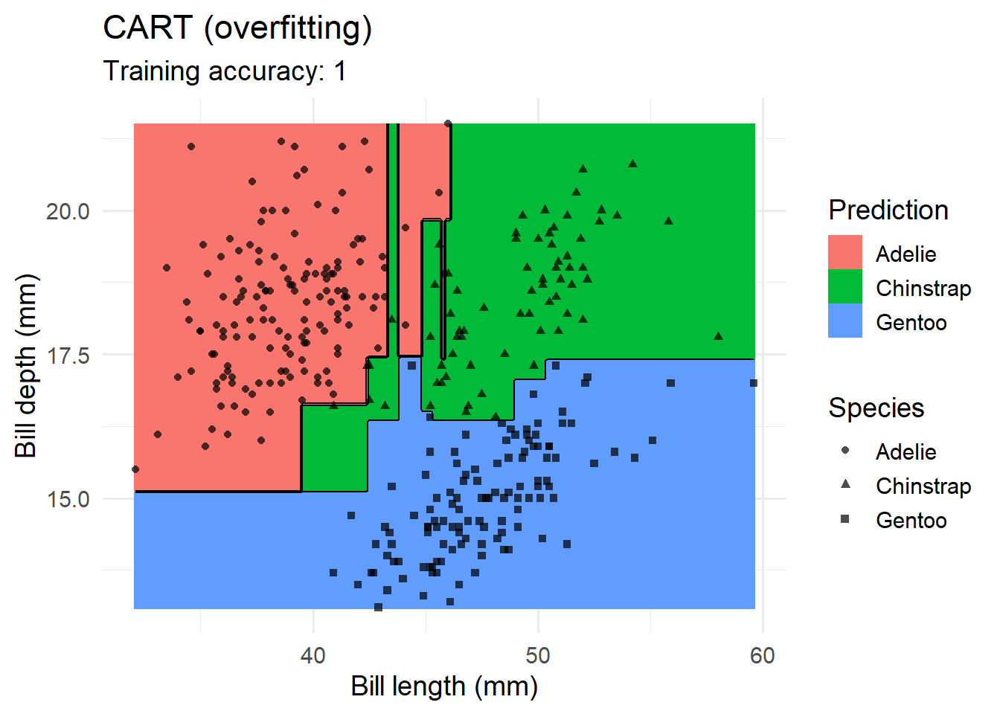
###### C.50
model <- x |> C50::C5.0(species ~ ., data = _)
decisionplot(model, x, class_var = "species") +
labs(title = "C5.0",
x = "Bill length (mm)",
y = "Bill depth (mm)",
shape = "Species",
fill = "Prediction")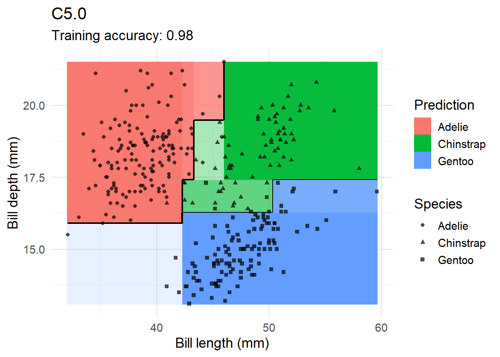
###### Random Forest
model <- x |> randomForest::randomForest(species ~ ., data = _)
decisionplot(model, x, class_var = "species") +
labs(title = "Random Forest",
x = "Bill length (mm)",
y = "Bill depth (mm)",
shape = "Species",
fill = "Prediction")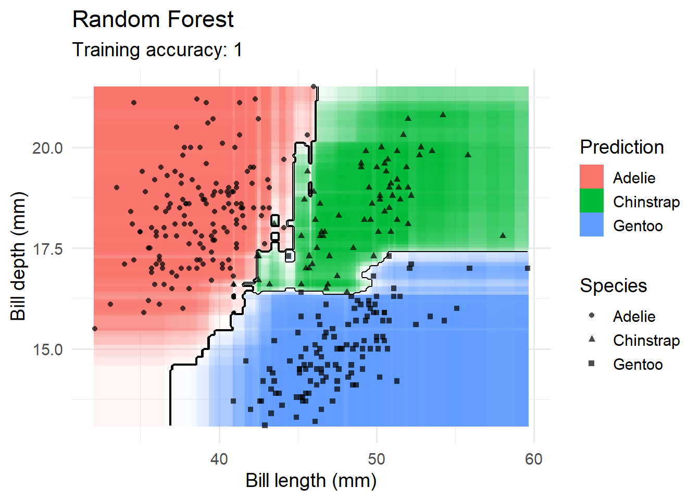
###### Support Vector Model (Linear Kernel)
model <- x |> e1071::svm(species ~ ., data = _, kernel = "linear")
decisionplot(model, x, class_var = "species") +
labs(title = "SVM (linear kernel)",
x = "Bill length (mm)",
y = "Bill depth (mm)",
shape = "Species",
fill = "Prediction")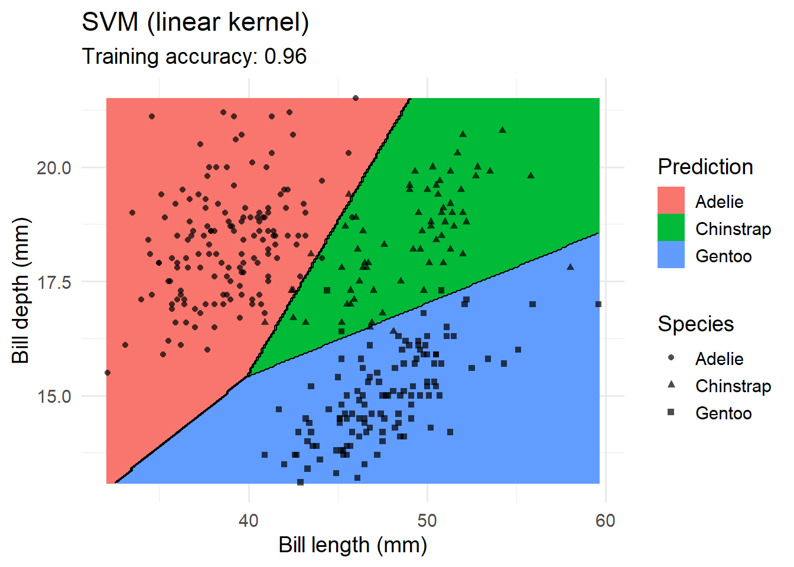
###### Support Vector Model (Radial Kernel)
model <- x |> e1071::svm(species ~ ., data = _, kernel = "radial")
decisionplot(model, x, class_var = "species") +
labs(title = "SVM (radial kernel)",
x = "Bill length (mm)",
y = "Bill depth (mm)",
shape = "Species",
fill = "Prediction")###### SVM (Polynomial Kernel)
model <- x |> e1071::svm(species ~ ., data = _, kernel = "polynomial")
decisionplot(model, x, class_var = "species") +
labs(title = "SVM (polynomial kernel)",
x = "Bill length (mm)",
y = "Bill depth (mm)",
shape = "Species",
fill = "Prediction")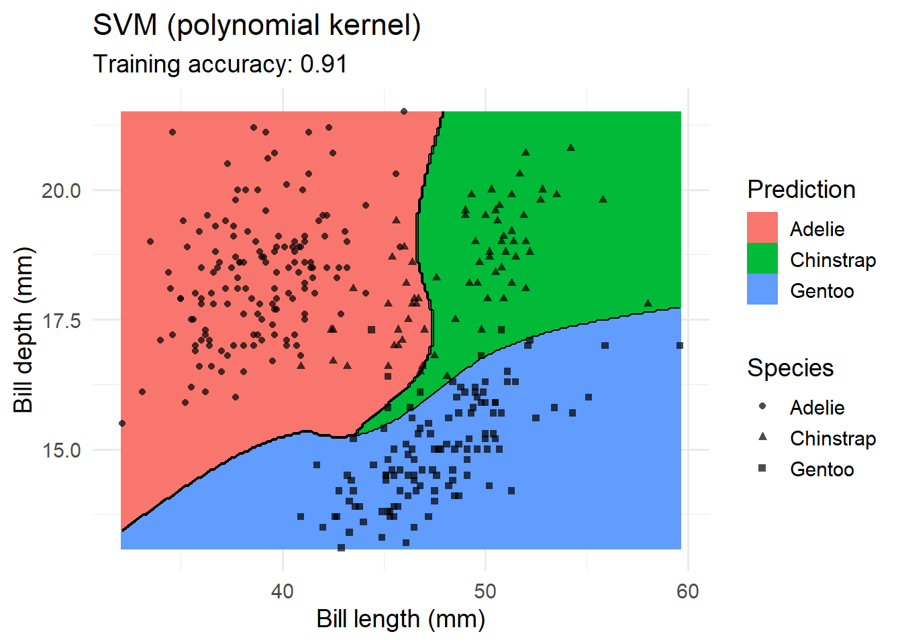
###### SVM (Sigmoid Kernel)
model <- x |> e1071::svm(species ~ ., data = _, kernel = "sigmoid")
decisionplot(model, x, class_var = "species") +
labs(title = "SVM (sigmoid kernel)",
x = "Bill length (mm)",
y = "Bill depth (mm)",
shape = "Species",
fill = "Prediction")
### Single Layer Feed-forward Neural Networks
###
### Adding this "nnet" package is interesting...
###### NN (1 Neuron)
model <-x |> nnet::nnet(species ~ ., data = _, size = 1, trace = FALSE)
decisionplot(model, x, class_var = "species",
predict_type = c("class", "raw")) +
labs(title = "NN (1 neuron)",
x = "Bill length (mm)",
y = "Bill depth (mm)",
shape = "Species",
fill = "Prediction")Warning: Computation failed in `stat_contour()`
Caused by error in `if (zero_range(range)) ...`:
! missing value where TRUE/FALSE needed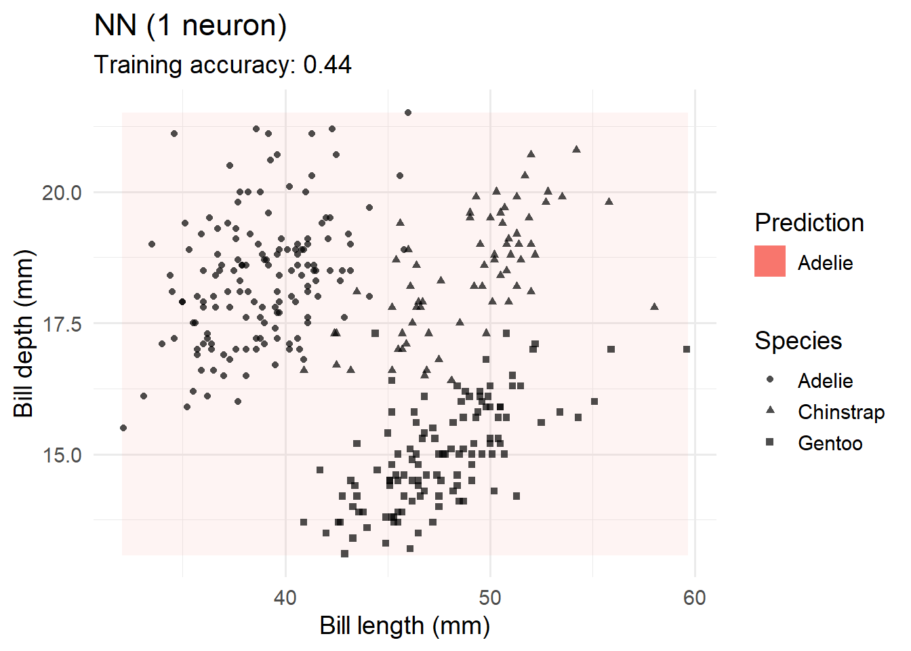
###### NN (2 Neurons)
model <-x |> nnet::nnet(species ~ ., data = _, size = 2, trace = FALSE)
decisionplot(model, x, class_var = "species",
predict_type = c("class", "raw")) +
labs(title = "NN (2 neurons)",
x = "Bill length (mm)",
y = "Bill depth (mm)",
shape = "Species",
fill = "Prediction")Warning: Computation failed in `stat_contour()`
Caused by error in `if (zero_range(range)) ...`:
! missing value where TRUE/FALSE needed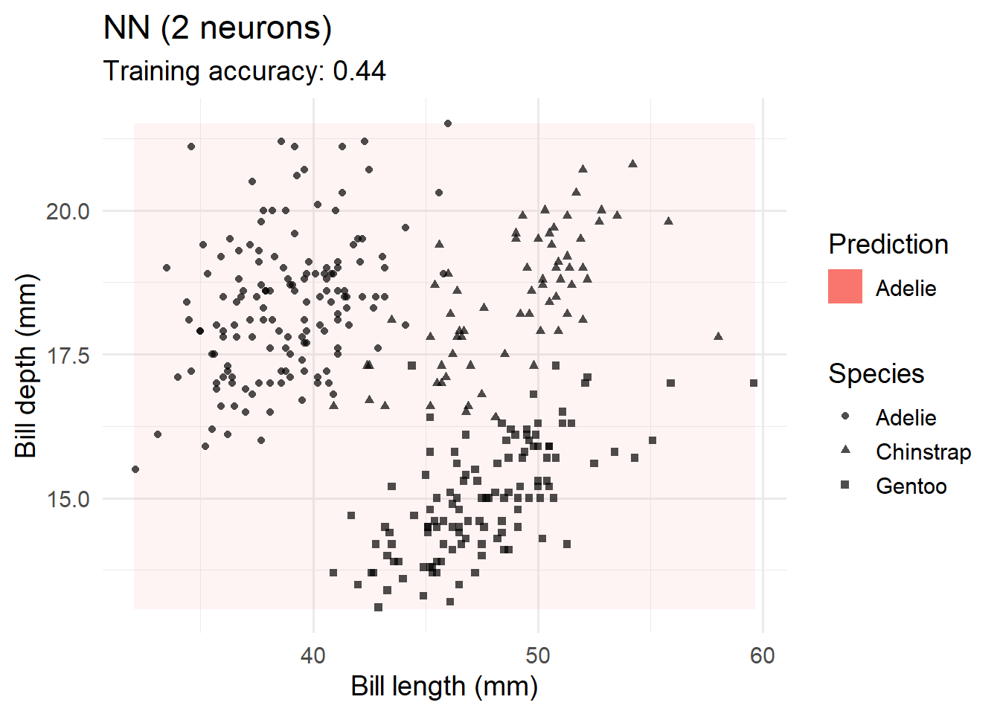
###### NN (4 Neurons)
model <-x |> nnet::nnet(species ~ ., data = _, size = 4, trace = FALSE)
decisionplot(model, x, class_var = "species",
predict_type = c("class", "raw")) +
labs(title = "NN (4 neurons)",
x = "Bill length (mm)",
y = "Bill depth (mm)",
shape = "Species",
fill = "Prediction")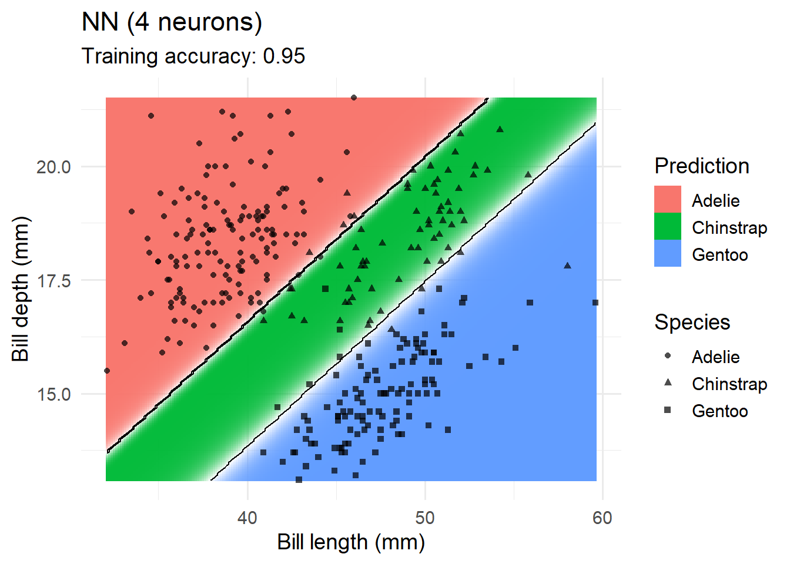
###### NN (10 Neurons)
model <-x |> nnet::nnet(species ~ ., data = _, size = 10, trace = FALSE)
decisionplot(model, x, class_var = "species",
predict_type = c("class", "raw")) +
labs(title = "NN (10 neurons)",
x = "Bill length (mm)",
y = "Bill depth (mm)",
shape = "Species",
fill = "Prediction")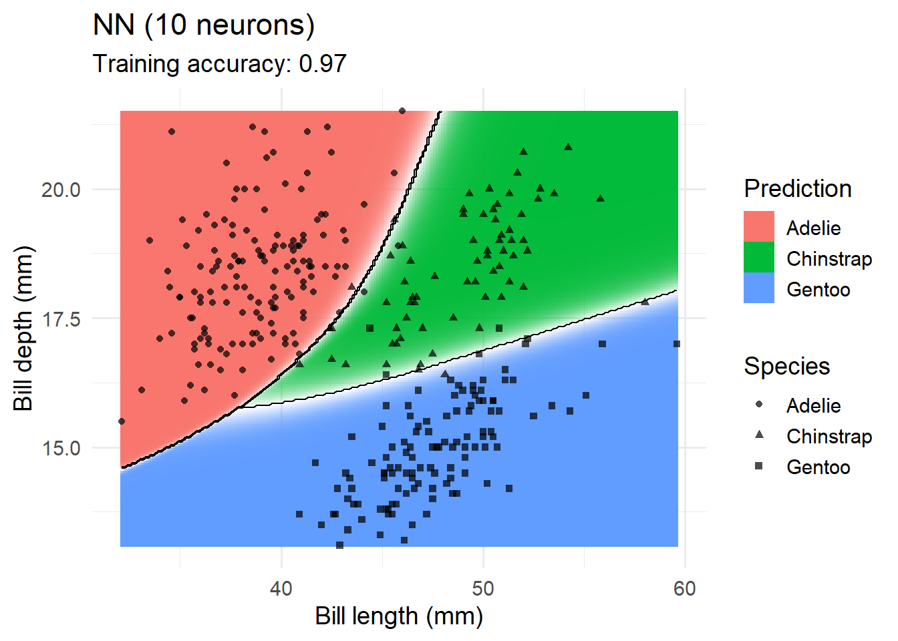
### Circle Dataset
###
### This is a new dataset that we'll be performing the above analysis on.
set.seed(1000)
x <- mlbench::mlbench.circle(500)
###x <- mlbench::mlbench.cassini(500)
###x <- mlbench::mlbench.spirals(500, sd = .1)
###x <- mlbench::mlbench.smiley(500)
x <- cbind(as.data.frame(x$x), factor(x$classes))
colnames(x) <- c("x", "y", "class")
x <- as_tibble(x)
x# A tibble: 500 × 3
x y class
<dbl> <dbl> <fct>
1 -0.344 0.448 1
2 0.518 0.915 2
3 -0.772 -0.0913 1
4 0.382 0.412 1
5 0.0328 0.438 1
6 -0.865 -0.354 2
7 0.477 0.640 2
8 0.167 -0.809 2
9 -0.568 -0.281 1
10 -0.488 0.638 2
# ℹ 490 more rowsggplot(x, aes(x = x, y = y, color = class)) +
geom_point() +
theme_minimal(base_size = 14)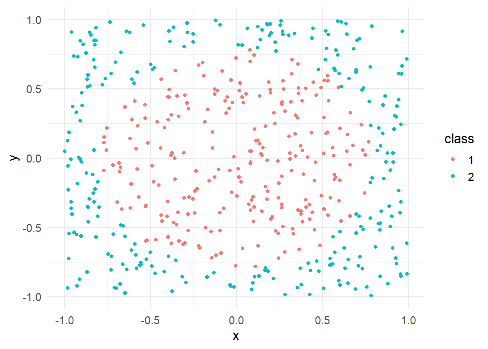
###### K-Nearest Neighbors Classifier
######### kNN (1 Neighbor)
model <- x |> caret::knn3(class ~ ., data = _, k = 1)
decisionplot(model, x, class_var = "class") +
labs(title = "kNN (1 neighbor)",
shape = "Class",
fill = "Prediction")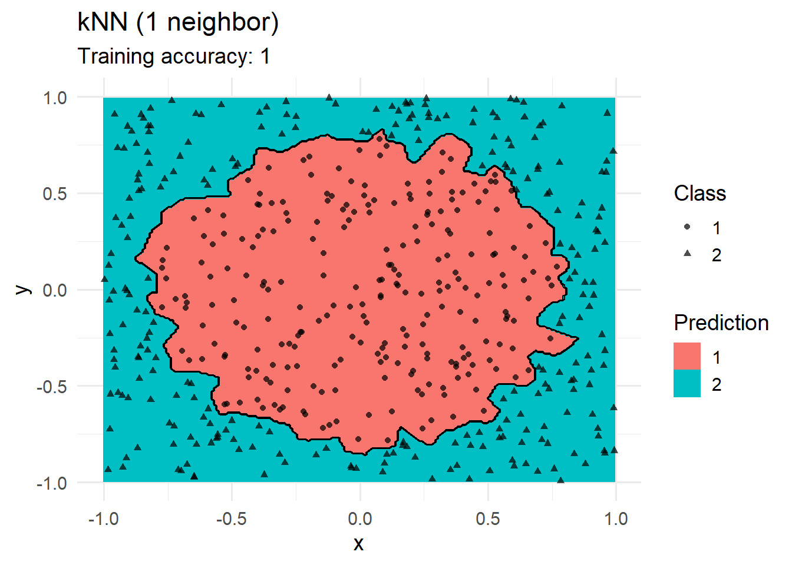
######### kNN (10 Neighbor)
model <- x |> caret::knn3(class ~ ., data = _, k = 10)
decisionplot(model, x, class_var = "class") +
labs(title = "kNN (10 neighbor)",
shape = "Class",
fill = "Prediction")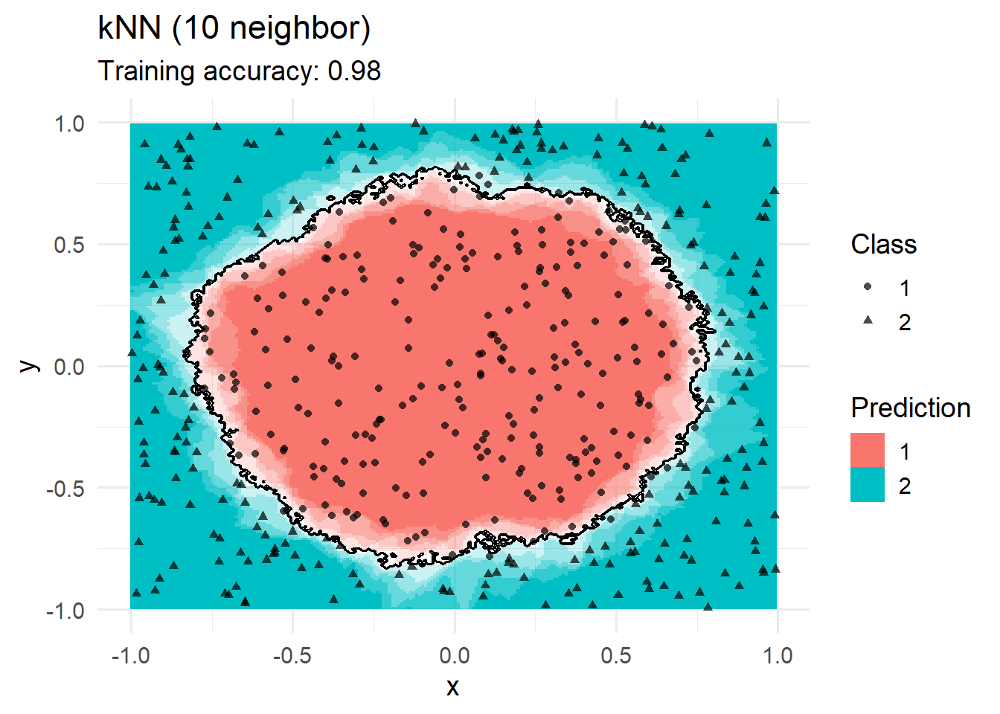
###### Naive Bayes Classifier
model <- x |> e1071::naiveBayes(class ~ ., data = _)
decisionplot(model, x, class_var = "class",
predict_type = c("class", "raw")) +
labs(title = "naive Bayes",
shape = "Class",
fill = "Prediction")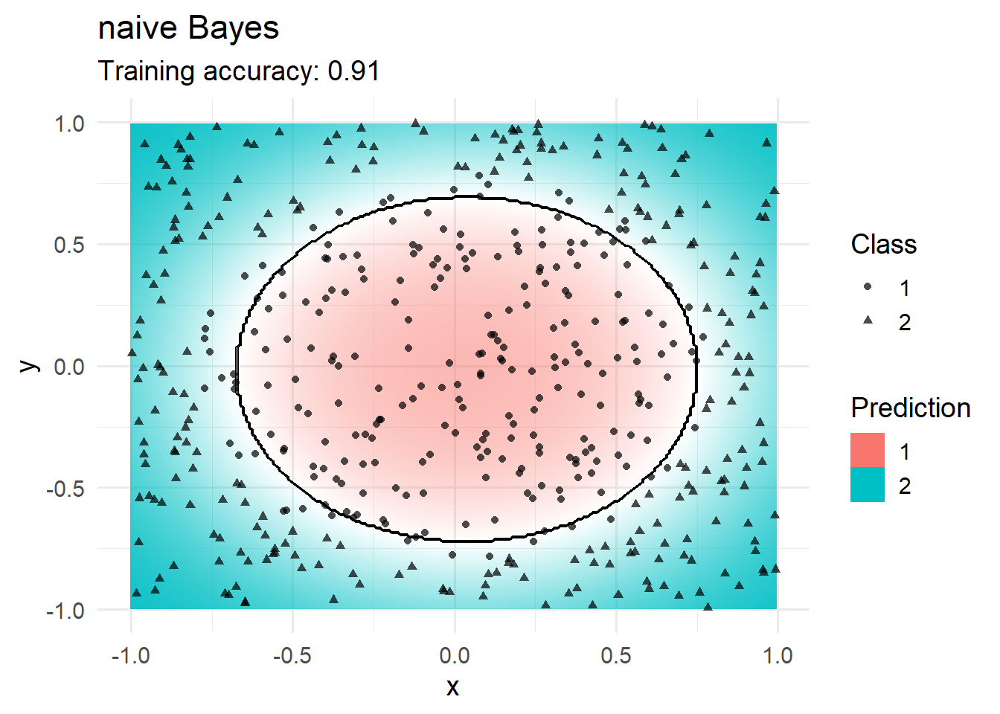
###### Linear Discriminant Analysis
######
###### (LDA cannot find a good model since the true decision boundary is not ###### linear.)
model <- x |> MASS::lda(class ~ ., data = _)
decisionplot(model, x, class_var = "class") +
labs(title = "LDA",
shape = "Class",
fill = "Prediction")
###### Logistic Regression (implemented in nnet)
model <- x |> nnet::multinom(class ~., data = _)# weights: 4 (3 variable)
initial value 346.573590
final value 346.308371
convergeddecisionplot(model, x, class_var = "class") +
labs(title = "Multinomial Logistic Regression",
shape = "Class",
fill = "Prediction")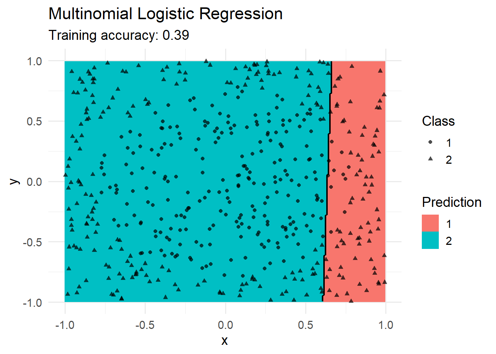
### Decision Trees
###### CART
model <- x |> rpart::rpart(class ~ ., data = _)
decisionplot(model, x, class_var = "class") +
labs(title = "CART",
shape = "Class",
fill = "Prediction")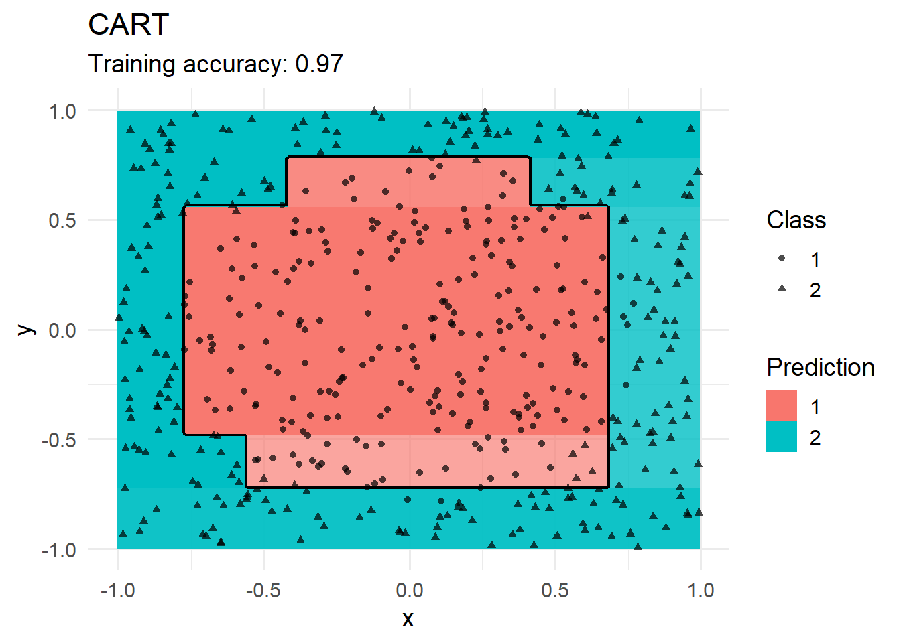
###### CART (Overfitting)
model <- x |> rpart::rpart(class ~ ., data = _,
control = rpart.control(cp = 0.001, minsplit = 1))
decisionplot(model, x, class_var = "class") +
labs(title = "CART (overfitting)",
shape = "Class",
fill = "Prediction")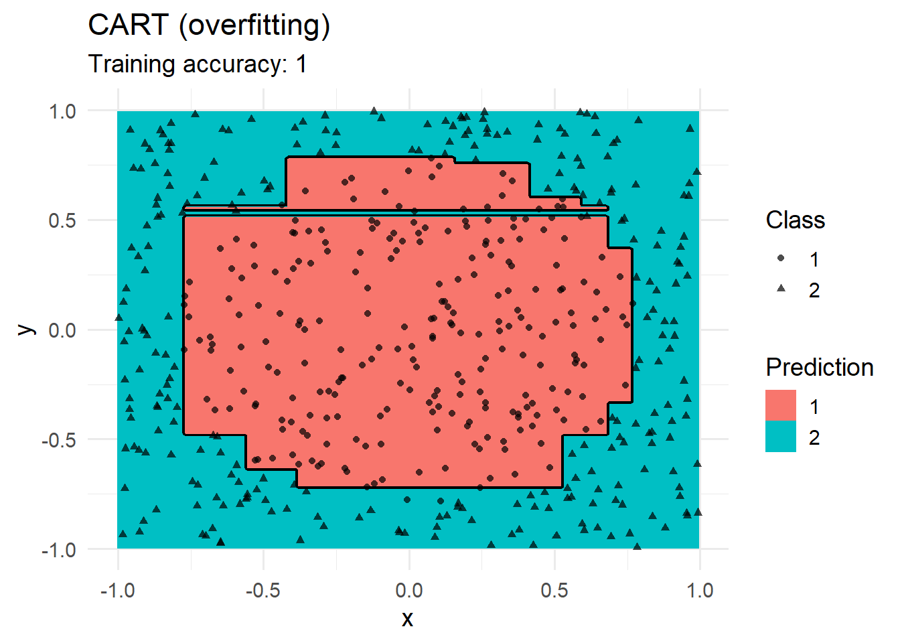
###### C5.0
model <- x |> C50::C5.0(class ~ ., data = _)
decisionplot(model, x, class_var = "class") +
labs(title = "C5.0",
shape = "Class",
fill = "Prediction")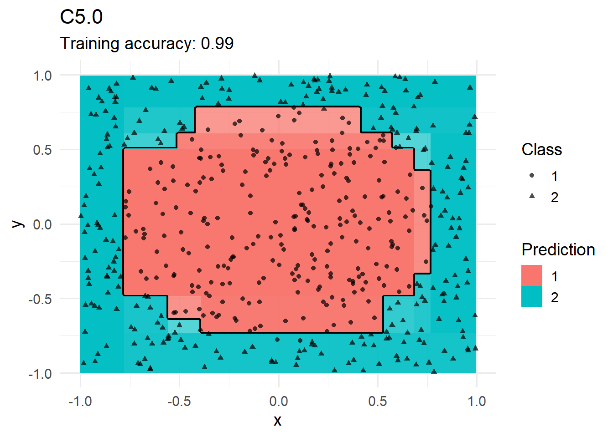
###### Random Forest
library(randomForest)
model <- x |> randomForest(class ~ ., data = _)
decisionplot(model, x, class_var = "class") +
labs(title = "Random Forest",
shape = "Class",
fill = "Prediction")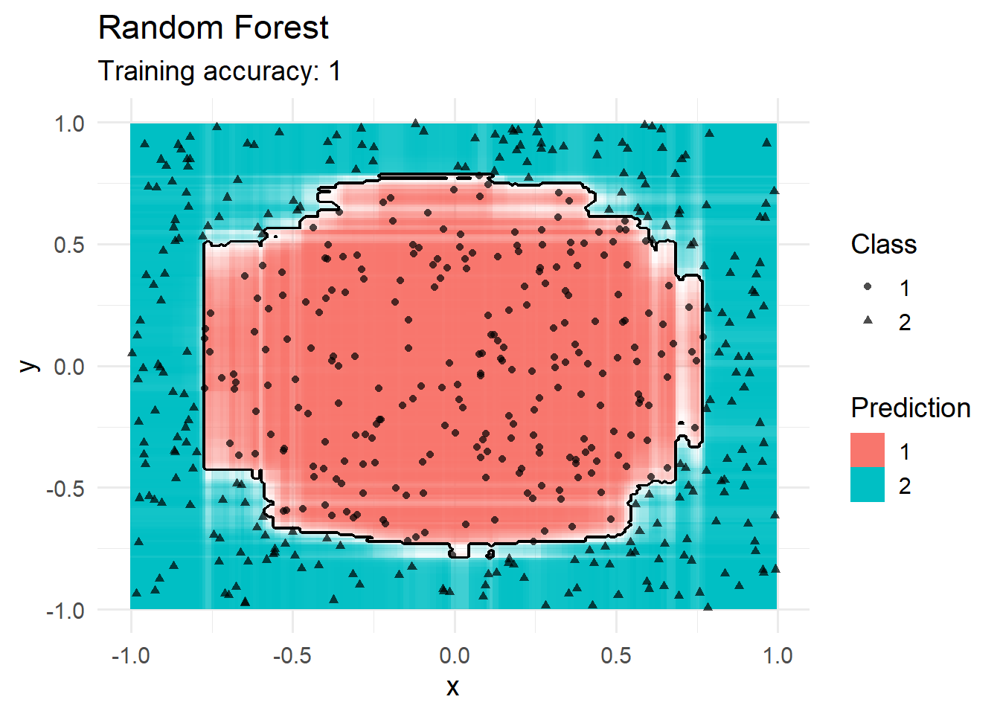
###### SVM
model <- x |> e1071::svm(class ~ ., data = _, kernel = "linear")
decisionplot(model, x, class_var = "class") +
labs(title = "SVM (linear kernel)",
shape = "Class",
fill = "Prediction")Warning: Computation failed in `stat_contour()`
Caused by error in `if (zero_range(range)) ...`:
! missing value where TRUE/FALSE needed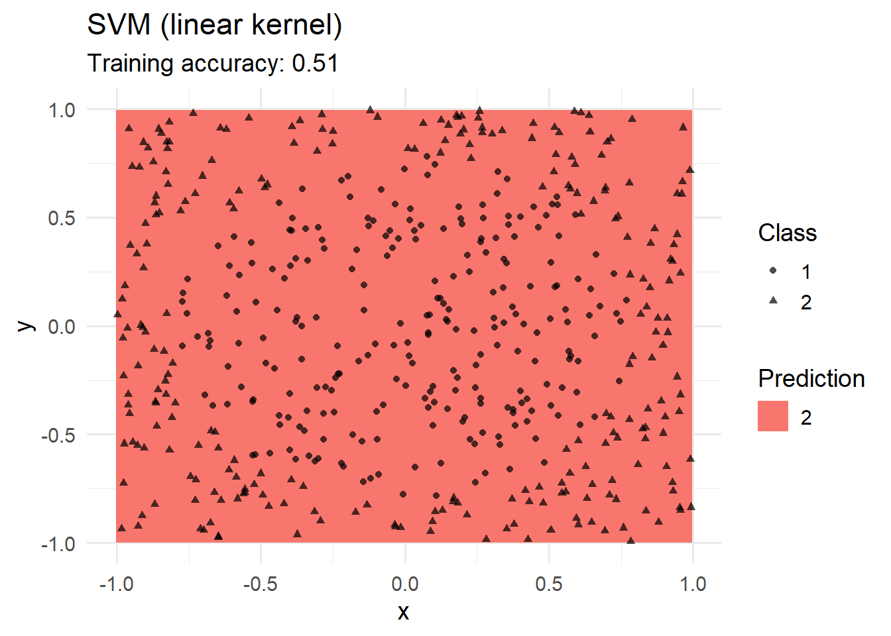
###### SVM (Radial Kernel)
model <- x |> e1071::svm(class ~ ., data = _, kernel = "radial")
decisionplot(model, x, class_var = "class") +
labs(title = "SVM (radial kernel)",
shape = "Class",
fill = "Prediction")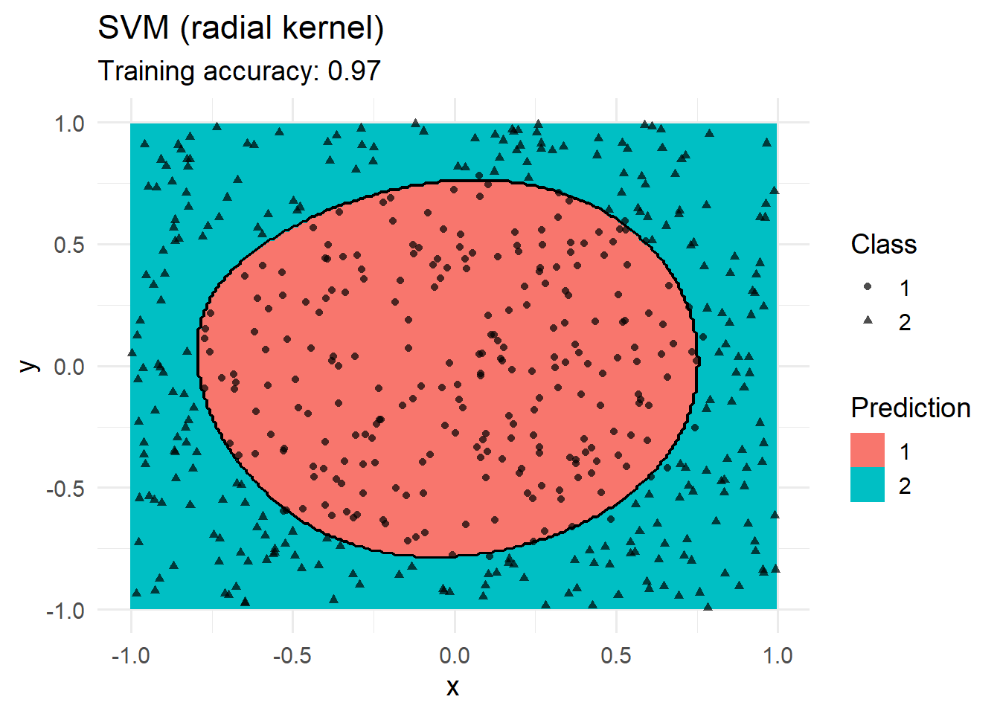
###### SVM (Polynomial Kernel)
model <- x |> e1071::svm(class ~ ., data = _, kernel = "polynomial")
decisionplot(model, x, class_var = "class") +
labs(title = "SVM (polynomial kernel)",
shape = "Class",
fill = "Prediction")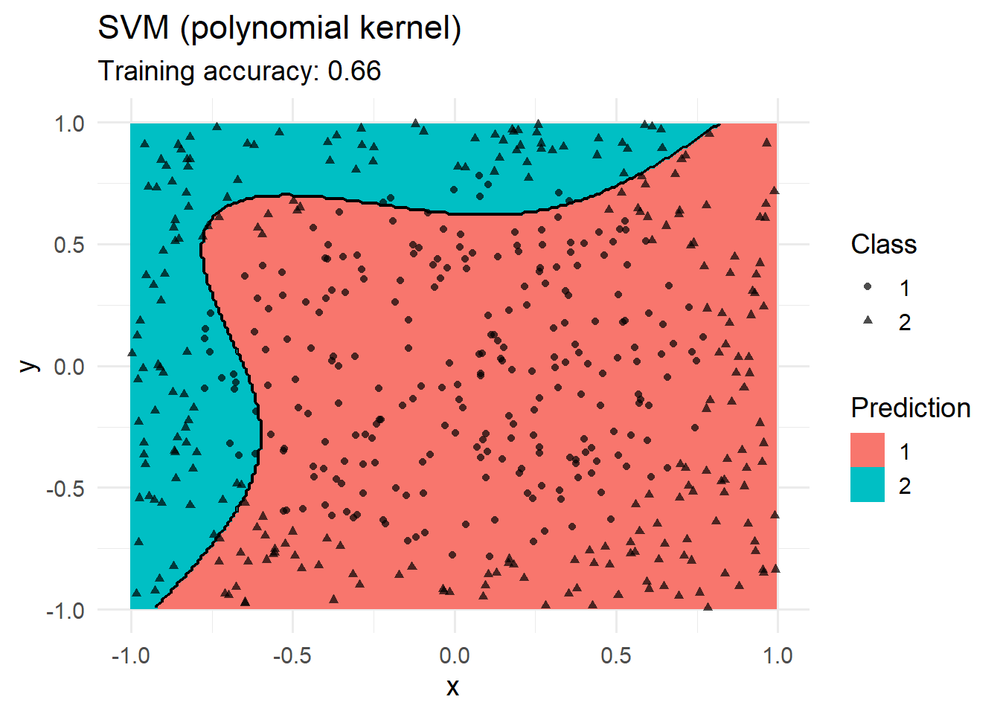
###### SVM (Sigmoid Kernel)
model <- x |> e1071::svm(class ~ ., data = _, kernel = "sigmoid")
decisionplot(model, x, class_var = "class") +
labs(title = "SVM (sigmoid kernel)",
shape = "Class",
fill = "Prediction")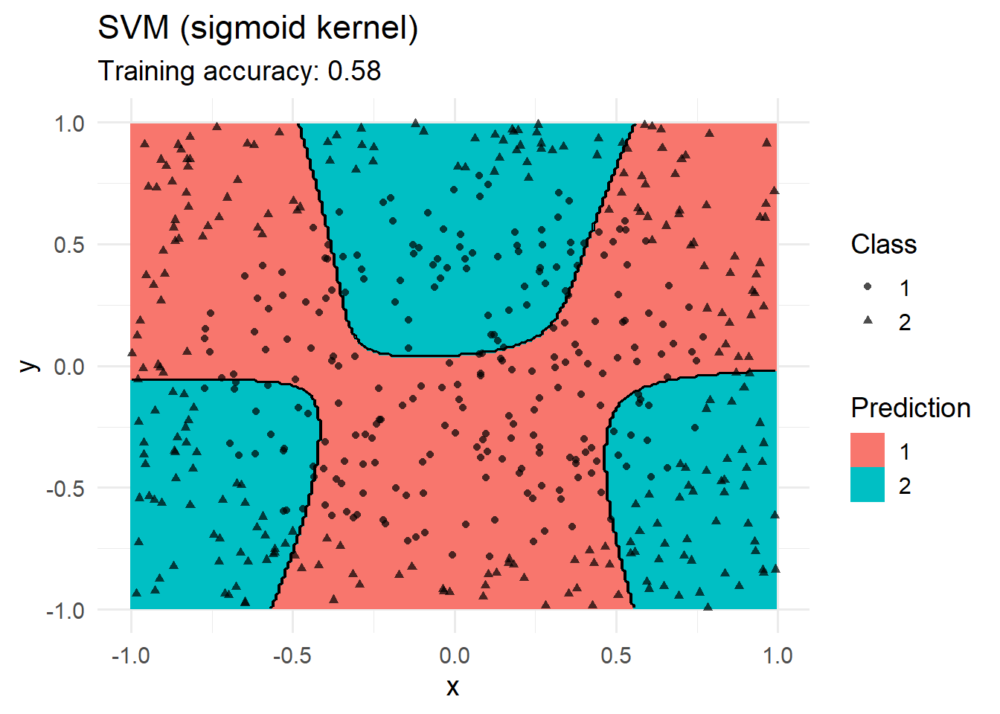
### Single Layer Feed-forward Neural Networks
###### NN (1 Neuron)
model <-x |> nnet::nnet(class ~ ., data = _, size = 1, trace = FALSE)
decisionplot(model, x, class_var = "class",
predict_type = c("class")) +
labs(title = "NN (1 neuron)",
shape = "Class",
fill = "Prediction")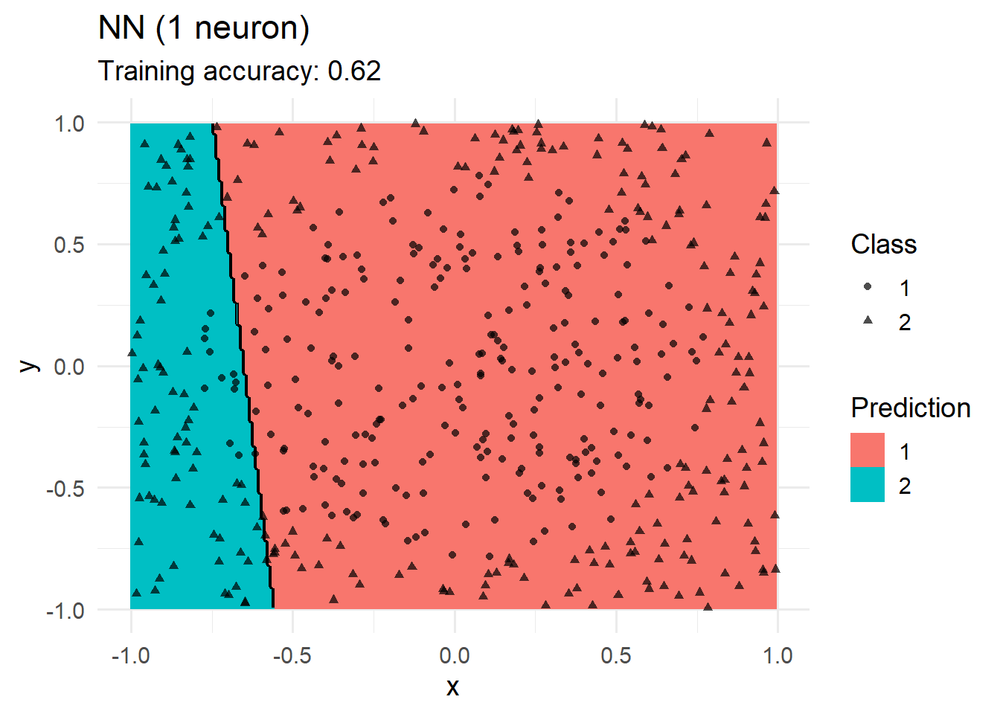
###### NN (2 Neurons)
model <-x |> nnet::nnet(class ~ ., data = _, size = 2, trace = FALSE)
decisionplot(model, x, class_var = "class",
predict_type = c("class")) +
labs(title = "NN (2 neurons)",
shape = "Class",
fill = "Prediction")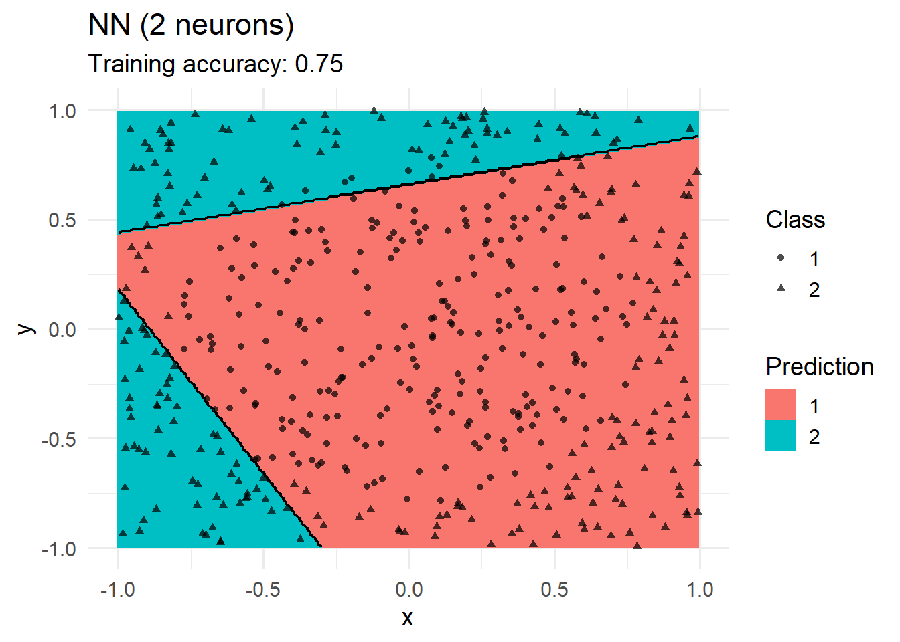
###### NN (4 Neurons)
model <-x |> nnet::nnet(class ~ ., data = _, size = 4, trace = FALSE)
decisionplot(model, x, class_var = "class",
predict_type = c("class")) +
labs(title = "NN (4 neurons)",
shape = "Class",
fill = "Prediction")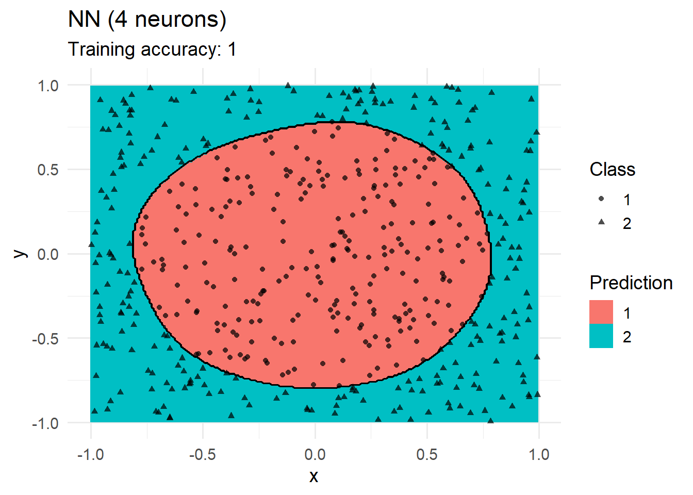
###### NN (10 Neurons)
model <-x |> nnet::nnet(class ~ ., data = _, size = 10, trace = FALSE)
decisionplot(model, x, class_var = "class",
predict_type = c("class")) +
labs(title = "NN (10 neurons)",
shape = "Class",
fill = "Prediction")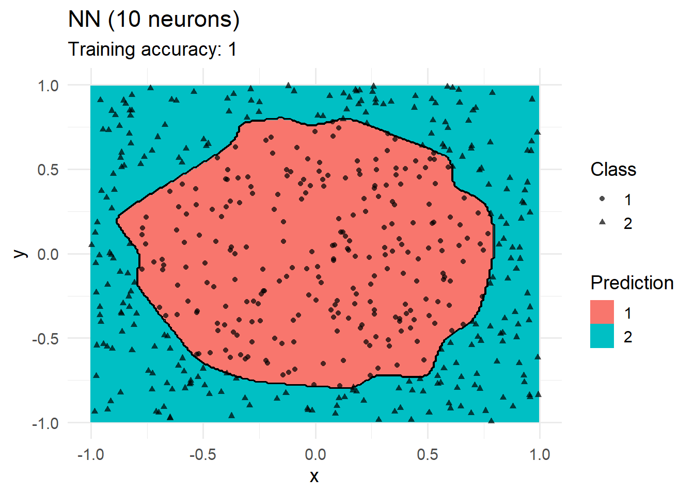